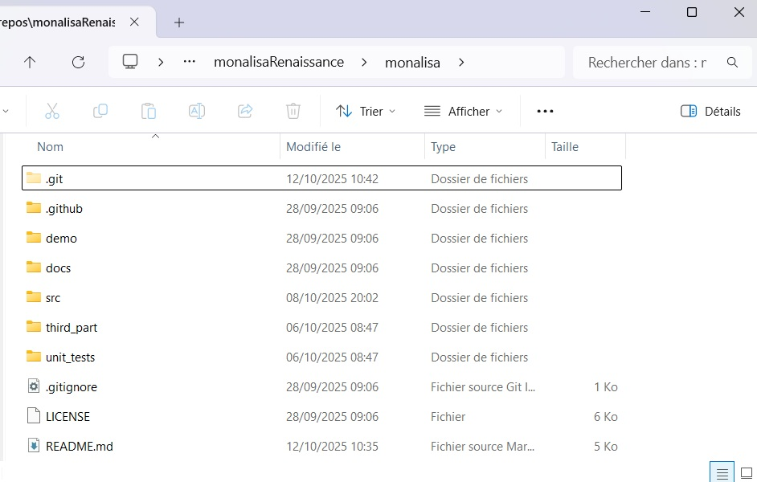

Instalation
Since the code of Monalisa is stored in a Github repository, you have to use Git to install the toolbox on your computer. If you are used to Git and to command prompt interfaces (terminals), you can directly go to the step Compilation in Matlab.
In the other case, just follow the two simple steps hereafter. Note that you will need to open a terminal to use git properly. On Windows, you can use the powershell or the command prompt terminals. Just search for one of those two by typing powershell or command prompt in the search text box in the start menu. To run a terminal on Linux, type terminal in the research text box in the start menu.
Install Git
On Windows
To install git on Windows, go to the git page, download the installer and run it. In order to check it Git is installed correclty, open a terminal and type the command
git -v
If the installation succeded you should see an answer like
git version 2.49.0.windows.1
On Linux
If you work on Linux, you probably already know how to install git. In case your are not a specialist of UNIX systems just like me, but you try to use Linux, you are probably working on Ubuntu. Then the following command should install Git :
sudo apt update
sudo apt install git
In any case, if one of your friends is an LLM (Large Language Model), it will typically gives you a greate help for those kind of things. In order to check it Git is installed correclty, open a terminal and type the command
git -v
If the installation succeded you should see an answer like
git version 2.48.1
Clone the repository
First create a folder on your computer were the toolbox will be downloaded. For example, name that folder monalisaRenaissance.
Then open a terminal and go into the folder you just created. For me, this was done by running the command
cd C:\main\repos\monalisaRenaissance
We are going to clone the monalisa repository inside. For that, go
to monalisaRenaissance. Then
click on the green button <>Code and copy from there the URL of the repository. Go back to you terminal and type
git clone <the URL you just copied>
It should take a few seconds (or minutes if your connection is slow) but after that you should see the directory monalisa inside the directory you chose to clone it (for me monalisaRenaissance).
Take a first look at the Monalisa folder
You can now open the Monalisa folder in a graphical navigator and you should be able to see the following content:
{kind=link}

All the functional code of the toolbox is made of functions (matlab or c++), classes, text files and maltab-apps files, which
are all stored in the src folder. No scripts, nor data nor any other kind of files are part of the toolbox. Don’t modify the
content of the scr folder unless you are an advanced user. Only the src folder, its content and its nested content are
affected by the license.
Demonstration scripts and demonstrations data are included in the demo folder. Playing in this folder is probably the best way
to go in touch with the toolbox (but you have first to complie the c++ code as described in the next section).
The third_part folder contains some files written by other authors and are possibly (probably) protected by their own license.
Some of the Monalisa functions call some function of the third_part folder to perform some technical tasks, such as data extraction from
rawdata files.
The docs folder contains the content of the documentation as well as the material to build it, while the folder unit_tests
remains empty for the moment. You don’t have to care about .git, .github or the file .gitignore. These folders and file
serve for the internal git mechanic. The README.md file is the one displayed in the git-repository and the LICENSE is a text file
that contains the license.
Install a c++ compiler
We cannot give a detailed explanation for that step. It depends mainly on your operating system. Here are however some hints.
On Windows
Expanation for Windows…
On Linux
Expanation for Linux…..
Compilation in Matlab
Open matlab and open the Monalisa in the Matlab consol bu typing
cd <your monalisa folder>
For me, that was done by the command
cd C:\main\repos\monalisaRenaissance\monalisa
You have then if Matlab recognizes one or many c++ compilers intalled on your systems. For that …